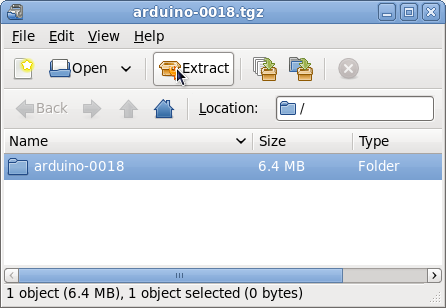

Installing Arduino on Fedora 12 (x86_32)
Software name : Arduino
Homepage : http://www.arduino.cc/
Software version used for this installation : Arduino 018 Alpha
Operating System use for this installation : Fedora Release 12 (Constantine)
Recommended Hardware : 300 Mhz processor (CPU) minimum
For an updated installation guide of the Arduino Software on Linux go to: http://www.arduino.cc/playground/Learning/Linux.
Requirements:
- Sun Java SE runtime enviroment (JRE RPM.bin Package)
Check if Java is installed by typing
java -version
in a Terminal which can be found in "Application/System Tools"-Menu.
If Java is not installed or a version older then 1.6.0 is found, download and install Java from http://java.sun.com/javase/downloads/index.jsp or use yum:
su- yum install java-1.6.0-openjdk
Next the packages uisp, avr-libc, avr-gcc-c++, rxtx and avrdude are required, type:
su - yum install uisp avr-libc avr-gcc-c++ rxtx avrdude
Now download the Arduino-Sotfware from http://arduino.cc/en/Main/Software. Unpack the downloaded archive. If you use the Arichive Manager, double-click the file and and click "Extract".

In Terminal:
tar -xvzf arduino-00??.tgz
In order to enable the communication with the Arduino with your user account, add your user to the groups uucp, lock and dialout to enable the necessary permissions.
su - usermod -G uucp,lock,dialout username
Alternatively you can use the graphical user interface "Users and Groups" which can be found under "System/Administration". First of all you have to disable "Hide system users and groups" in "Edit/Preferences" for showing the needed groups.

Select the groups, one after the other, click on "Properties/Group Users" and activate your username. After logging off and logging in, the changes take effect.
Start the Arduino Software with
cd <path to arduino> ./arduino